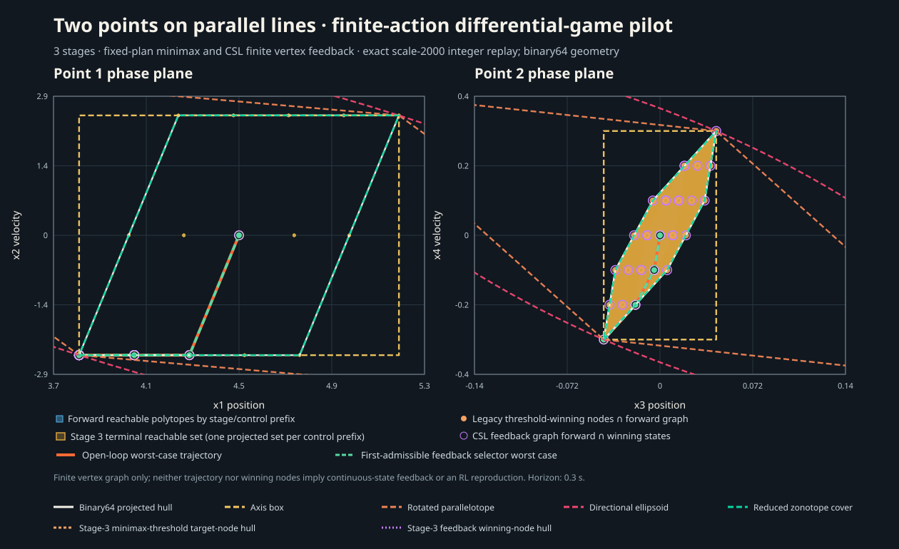

TwoPoints differential-game reachability
Finite three-stage pilot · binary64 projected hulls and outer set approximations

Each containment result is independently checked in its 2D projection against every binary64 terminal state vertex. Exact integer transitions are followed by binary64 conversion and a native projection; exact rational lattice inclusion is reported separately in the evidence. The plot does not imply a 4D containment guarantee or draw the continuous projection of the coupled terminal gap target; orange outlines show the projected hull of finite terminal nodes meeting its threshold. It shows backward-winning nodes restricted to the forward graph. Ellipse and rotated-parallelotope outlines can exceed the inherited plot limits and are clipped at the panel edge; their area ratios use their complete output shapes.
What this compares
The finite game uses three stages, controls {-2.5, 0, 2.5}, and disturbance vertices {-1, 0, 1}. Its terminal layer contains 345 states. We compare the hull of their binary64 projections with QuickHull, an axis box, a rotated parallelotope, a directional ellipsoid, and a zonotope axis cover.
The exact rational lattice hull has 4 vertices in (x1,x2) and 6 in (x3,x4); the rounded binary64 hull has 4 and 8. The checker also reports whether each method contains every rational lattice point. Some QuickHull, box, and parallelotope outputs miss points there even though they contain the stored binary64 reference.
The approximation methods are outer methods; no continuous convex inner approximation is claimed. An independent exhaustive finite-game oracle checks all 27 control sequences against all 27 disturbance sequences and retains a realizable minimizing control and its worst disturbance response. Objective bounds are emitted only when the relevant phase-plane output contains every exact scale-2000 state.
This is a finite-action discretization of a differential-game environment previously used for RL. It does not reproduce the upstream continuous-action 10-second RL experiment. The comparison covers the final projected forward hull; it does not propagate approximations through reachability or minimax recursion.
Results
QuickHull returns 4 vertices in (x1,x2) and 8 in (x3,x4), equivalent to the stored binary64 input hull. Every outer method contains all binary64 reference vertices in both projections. The reduced zonotope area ratio is 1.00000000047 in both planes. Three of its six source generators are zero and the four-generator output retains all three active generators, so this is not an active-generator reduction result.
Exact finite enumeration gives minimax terminal squared position gap 58,323,769 / 4,000,000 = 14.58094225, with control [-2.5,-2.5,-2.5] and worst disturbance [-1,-1,-1]. Checked objective intervals are: ellipsoid [3.3052329057514624, 16.30967743126202]; rotated parallelotope upper bound 16.280491371900826 (its lower bound is inconclusive); zonotope [14.580942248710857, 14.58094225007735]. QuickHull and axis-box bounds are inconclusive because they omit exact lattice states. The exact fractions, witness path and bound derivations are in check.json.
Seven alternating single-call measurements per method and projection are included in run.json; the independent checker verifies all 80 warmup and timed outputs. Timing scopes differ between the direct QuickHull call and approximation policy calls, and the zonotope input is preconstructed; these are descriptive observations without a speed ranking claim. A source-mapped limiter profile was unavailable. See the report notes for medians, ranges, limitations and reproduction steps.
Evidence
- Exact finite-game reference reconstruction
- Raw method results and timings
- Independent projected inclusion checks
- Immutable comparison record for (x1,x2)
- Immutable comparison record for (x3,x4)
- Build, input hashes and measurement conditions
- Bundle checksums
- Reachability and finite-feedback source report